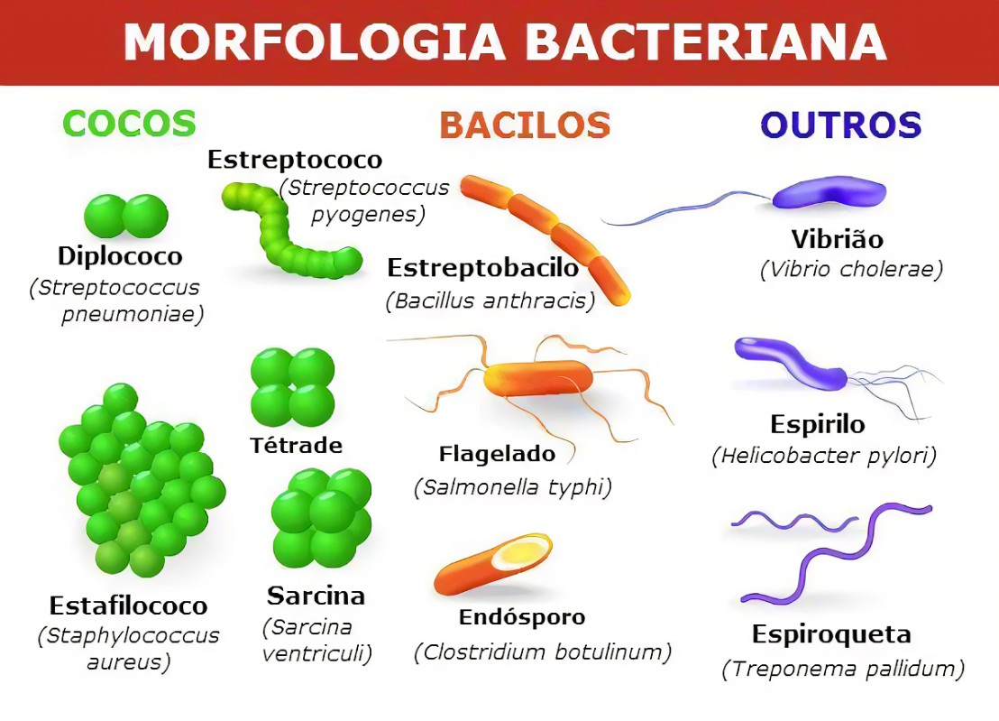

Importância das bactérias e suas funções Toda a diversidade das bactérias também demonstra uma diversidade de funções. Vejamos a seguir:
Renovação de nitrogênio no ambiente. Na natureza, as bactérias participam do Ciclo do Nitrogênio, ajudando em diversas etapas. Produção de alimentos. As bactérias são utilizadas na fabricação de iogurtes, queijos e coalhadas, em que se utiliza os lactobacilos. Produção de remédios e suplementos. Na indústria farmacêutica, são produzidos antibióticos e vitaminas a partir de bactérias. Desenvolvimento da engenharia genética. É possível usar bactérias geneticamente modificadas para produzir proteínas humanas, como hormônio do crescimento e insulina. Biorremediação de ambientes. É possível introduzir bactérias do gênero Pseudomonas em ambientes poluídos para descontaminação. Esse processo recebe o nome de biorremediação, pois as bactérias agem oxidando compostos orgânicos nocivos e tornando-os inofensivos. Morfologia bacteriana e tipos de bactérias As bactérias podem apresentar diferentes formas: esféricas, de bastões, espiraladas, de vírgula, entre outras. Observe a seguir exemplos de bactérias e os formatos de cada ser.
Conforme podemos observar na imagem, de acordo com a forma ou morfologia, as bactérias recebem uma designação específica:
• Cocos: são esféricos ou arredondados;
• Bacilos: são alongados e cilíndricos;
• Espirilos: são longos, espiralados e deslocam-se por meio de flagelos;
• Espiroquetas: são espiralados e deslocam-se com movimentos ondulatórios;
• Vibriões: apresentam aspecto de vírgula.